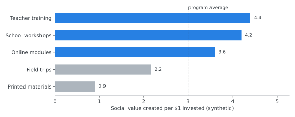
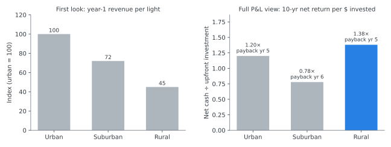

KPMG: SROI & Investment Decision Modeling
Experience at a glance
Researcher · KPMG Climate Change & Sustainability · Jul 2016 – Apr 2018
- Conducted Social Return on Investment (SROI) analysis for three Taiwan-listed clients
- Environmental-education program: ran a cost-benefit analysis and made pricing and program recommendations that raised the program’s average SROI by about 10%
- Smart-city streetlight project: forecasted the project’s profit and loss and identified an opportunity to expand installation into rural areas
- Analyzed 200+ international climate policies across six energy sectors, and turned complex ESG performance data into executive-ready briefs for C-level stakeholders
Method demo: from sustainability project to investment decision
Illustrative demonstration using synthetic data. Client financial information and project assumptions are not shown.
1. What SROI measures
SROI asks a business question about a social or environmental program: for every dollar invested, how much value does it create? Answering it means tracing the chain from spending to outcomes, then putting a monetary value on those outcomes.
Investment program budget
Activities what the program does
Outputs people reached, sessions held
Stakeholder outcomes what changes for them
Monetized benefits financial proxies, adjusted for attribution
SROI → decision
SROI = value created ÷ investment An SROI of 3.0 means each $1 invested creates about $3 of social and economic value.
2. Cost-benefit analysis: finding where value is created
A single program-level SROI hides a lot. Breaking the program into components shows which activities create the most value per dollar, and which ones drain the budget.

Illustrative demonstration using synthetic data. Client financial information and project assumptions are not shown.
Current design one blended SROI
Component view value per $ by activity
Find high-cost / low-impact e.g., printed materials above
Reallocate or reprice shift budget to high-value activities
More value per $
In the real engagement, this kind of analysis led to pricing and program-design recommendations that raised average SROI by about 10%. The chart above is fictional and does not reproduce that client’s figures.
3. Smart-city investment case: which areas are worth expanding into?
The second example is a P&L forecast for a fictional smart-streetlight rollout, comparing three deployment scenarios.
Upfront investment
Operating & maintenance cost
Revenue & economic benefit
Deployment scenario urban / suburban / rural
P&L forecast
Expansion decision

Illustrative demonstration using synthetic data. Client financial information and project assumptions are not shown.
The insight: judged on a headline metric, the rural scenario looks least attractive. Once upfront cost, operating cost, and benefits are modeled over the asset’s life, the ranking can change. A segment that is easy to dismiss can turn out to be an economically viable expansion opportunity. That was the kind of conclusion the real forecast supported.
Why this matters to the rest of my work. KPMG is where I started turning qualitative “should we do this?” questions into quantified investment cases. That habit carried through customer and pricing research at Ipsos and into product and pricing decisions at LINE.
Both projects on this page are fictional and every value is synthetic. The demo shows methodology only and does not represent any KPMG client engagement.